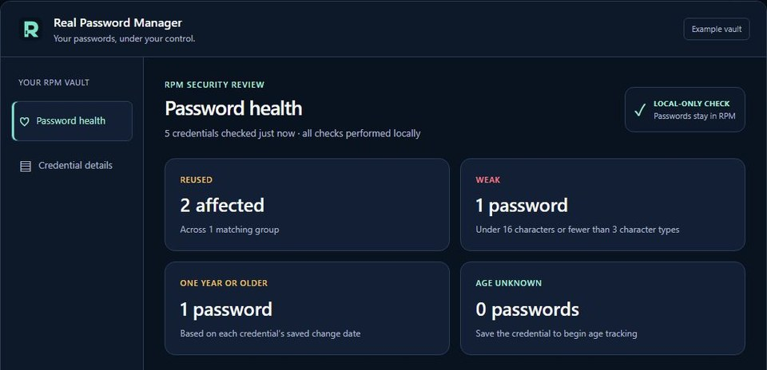

Independent project / In progress
RPM — Real Password Manager.
What began as a Python script with “encryption” has grown into a private security and usability project spanning Windows and Android. I plan to make it free and open source at 1.0, after working through the issues I still see.
Explore the interface preview
Security design
Protect the vault.
RPM uses AES-256-GCM for credential encryption. Security guides feature decisions as I work through the remaining issues before public release. The complete cryptographic design will be documented when the code is ready for review.
Everyday use
Make strong habits easier.
Biometric unlock works on Android, and YubiKey support works on Windows. Those options are meant to make routine access easier while encouraging a long master password. The Windows preview also shows password health checks for reused, weak, and older credentials.
Where it stands
RPM remains private while I work toward a free, open-source 1.0 release. The interface preview is an illustration with fictional credentials, not a working vault.
Open the two-view preview